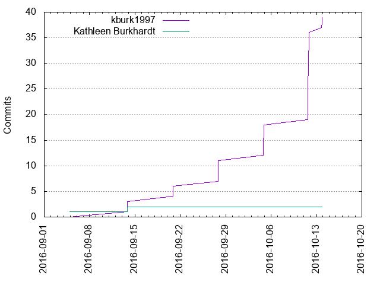
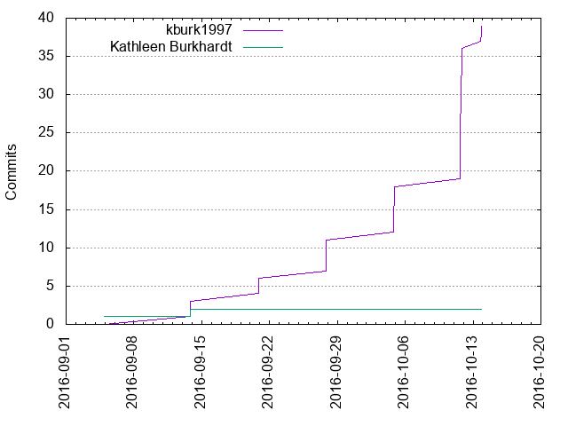

Authors
| Author | Commits (%) | + lines | - lines | First commit | Last commit | Age | Active days | # by commits |
|---|
| kburk1997 | 39 (95.12%) | 7965 | 257 | 2016-09-13 | 2016-10-13 | 30 days, 0:29:57 | 6 | 1 |
| Kathleen Burkhardt | 2 (4.88%) | 64 | 0 | 2016-09-04 | 2016-09-13 | 8 days, 21:05:29 | 2 | 2 |
 

| Month | Author | Commits (%) | Next top 5 | Number of authors |
|---|
| 2016-10 | kburk1997 | 28 (100.00% of 28) | | 1 |
| 2016-09 | kburk1997 | 11 (84.62% of 13) | Kathleen Burkhardt | 2 |
| Year | Author | Commits (%) | Next top 5 | Number of authors |
|---|
| 2016 | kburk1997 | 39 (95.12% of 41) | Kathleen Burkhardt | 2 |
| Domains | Total (%) |
|---|
| optonline.net | 41 (100.00%) |
|---|